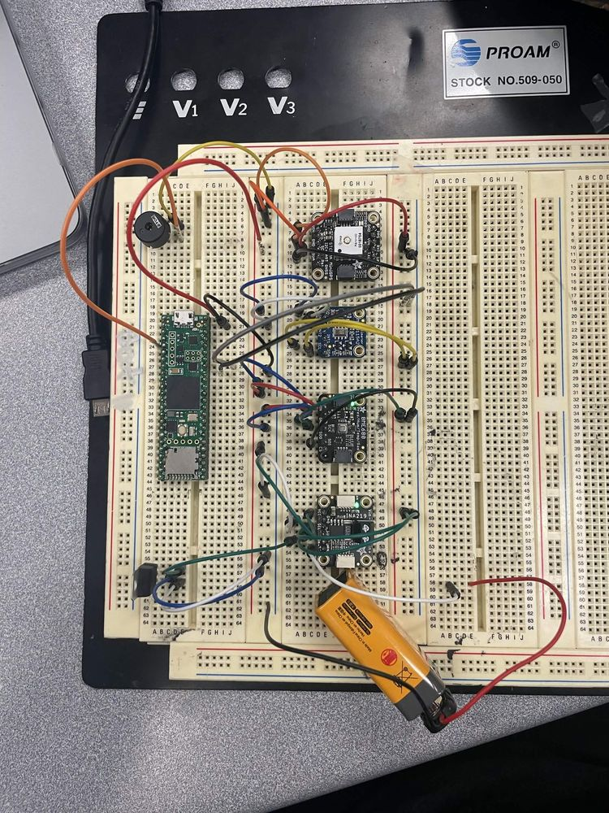
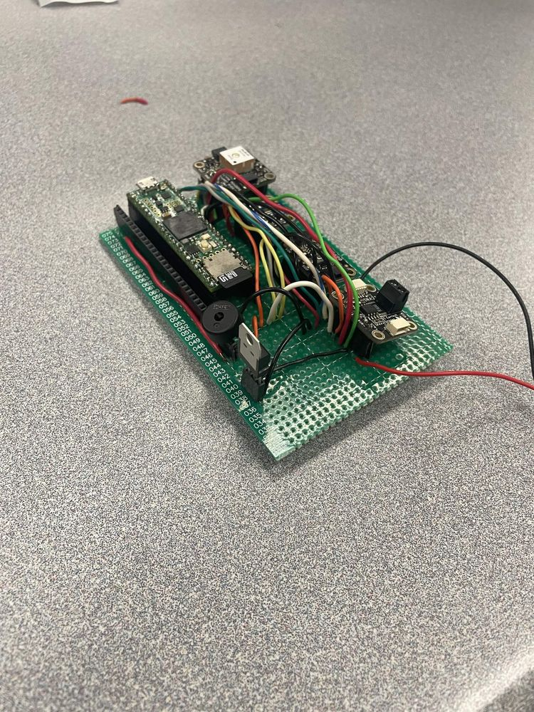

Embedded Systems
Student Rocket
Flight data from an instrumented payload lets a rocket team check its design against what actually happens in the air. The objective of this project was flight avionics that sense the payload’s environment in real time and log it onboard. I developed the flight software in C++ on a Teensy 4.1, reading the sensors in real time and logging to a microSD card. Before committing to a flight board, I captured the avionics schematic in KiCad and brought each sensor up on breadboard, including GPS, a BME680 environmental sensor, and an INA219 current monitor (Figure 1). Once each sensor logged correctly, I hand-wired the flight board on perfboard (Figure 2, Table 1) and designed the payload enclosure in SolidWorks, checking it with built-in FEA to protect the electronics during flight and landing. Bringing up each sensor on its own first meant that problems could be traced to a single component before everything was wired together.


| Part | Detail |
|---|---|
| Microcontroller | Teensy 4.1 |
| Sensors | GPS, BME680 environmental sensor, INA219 current monitor |
| Data logging | Onboard microSD card |
| Flight board | Schematic in KiCad, hand-wired on perfboard |
| Enclosure | Designed in SolidWorks, checked with FEA |